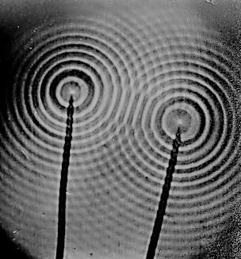

"The subtle pattern of light and dark fringes seen in the geometrical shadow when light passes an obstacle...is an example of the wave phenomenon of diffraction. Diffraction is a product of the superposition of waves--it is an interference effect. Whenever a wave is obstructed, those portions of the wave not affected by the obstruction interfere with one another in the region of space beyond the obstruction."

Some text in "Diffraction" is hidden against the background color of the page. To read hidden text, use the cursor to highlight obvious gaps in the text, such as this one. Other than that, please avoid communication with the alien research subjects. Our latest models have not been equipped to handle the complexity of human language yet. Thank you, and we hope you enjoy your trip to the Sagarentii Research Compound.
In 2060 CE, Asteria Corporation opened its first research compound on the minor planet Sagarentii, to research the Sagarentii palm--a tree that produces oils convertible for biodiesel. But the Sagarentii palm groves were guarded upon their arrival, by creatures with reptilian faces, moving across the land on giant, serpentine tails: this was humanity's first contact with the aliens that came to be known as Croakworms.
Croakworms are a sentient, but primitive species residing in Sagarentii's khalkedon caverns. They are clothed in little more than rags, and are armed with spears and knives coated with toxins from their skin. They feed on the fruit of the Sagarentii palm, and hold agricultural rituals in which they scatter their own blood meal to keep their Sagarentii palm groves fertile. They have no written language, and communicate through long, frog-like calls from which their name is derived. Additionally, Croakworms have no formal system of government. Their closest semblance to social order is their insistence on color-based division within their communities. Roughly half of a community's Croakworms will be black, while the other half will be white. Because black Croakworms are noctural, and white Croakworms diurnal, the two colors never mix except at dusk and dawn. No other Croakworm colors have ever been observed, with the exception of gray, which the Croakworms consider a mutant color. Many Croakworms had sought to eliminate the mutant color from their communities by killing gray Croakworms, but the mutation continued to be spread.
Asteria Corp. offered to help Croakworms research a way to end the gray mutation, in exchange for access to the Sagarentii palms. Communities that agreed were relocated to the Asteria Research Compound (ARC), where they became genetic research subjects. Other communities, especially those that have refused to kill gray Croakworms, have rejected the bargain and continued to block access to their groves. Recently, an organized collective of communities, who call themselves The Recovering, have started a guerilla war against Asteria Corp. in an attempt to disrupt its outreach efforts to persuade remaining Croakworm communities to come join the ARC.
To combat The Recovering, Asteria Corp. has created a group of genetically enhanced Croakworms called The Modeled Minority. These enhanced Croakworms--known as Models--are being trained to convince all Croakworms to embrace the ARC. But just as much as they are corporate ambassadors, the Models are also cultural ambassadors, advocating for the ultimate merits of embracing humankind. Someday, we hope our Models may help spread civilization to every planet. But until then, we invite you, visitor, to see our current progress.